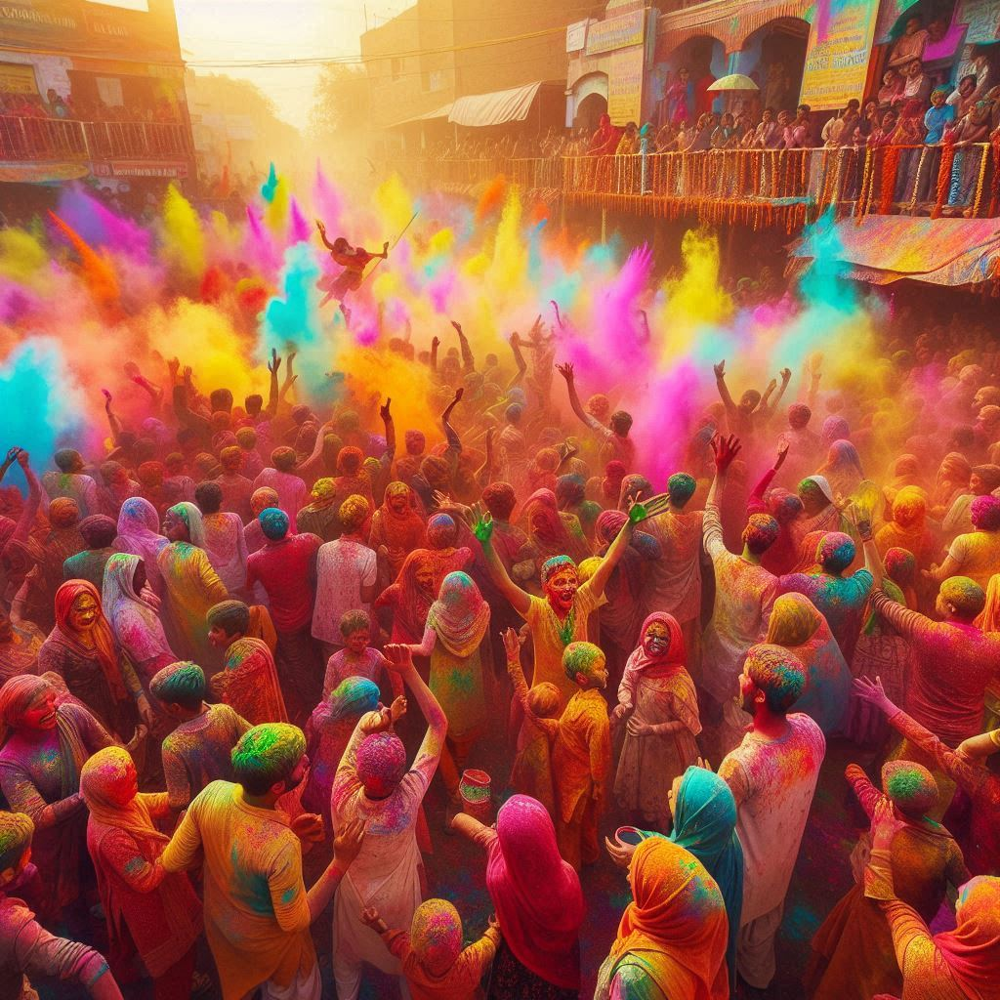
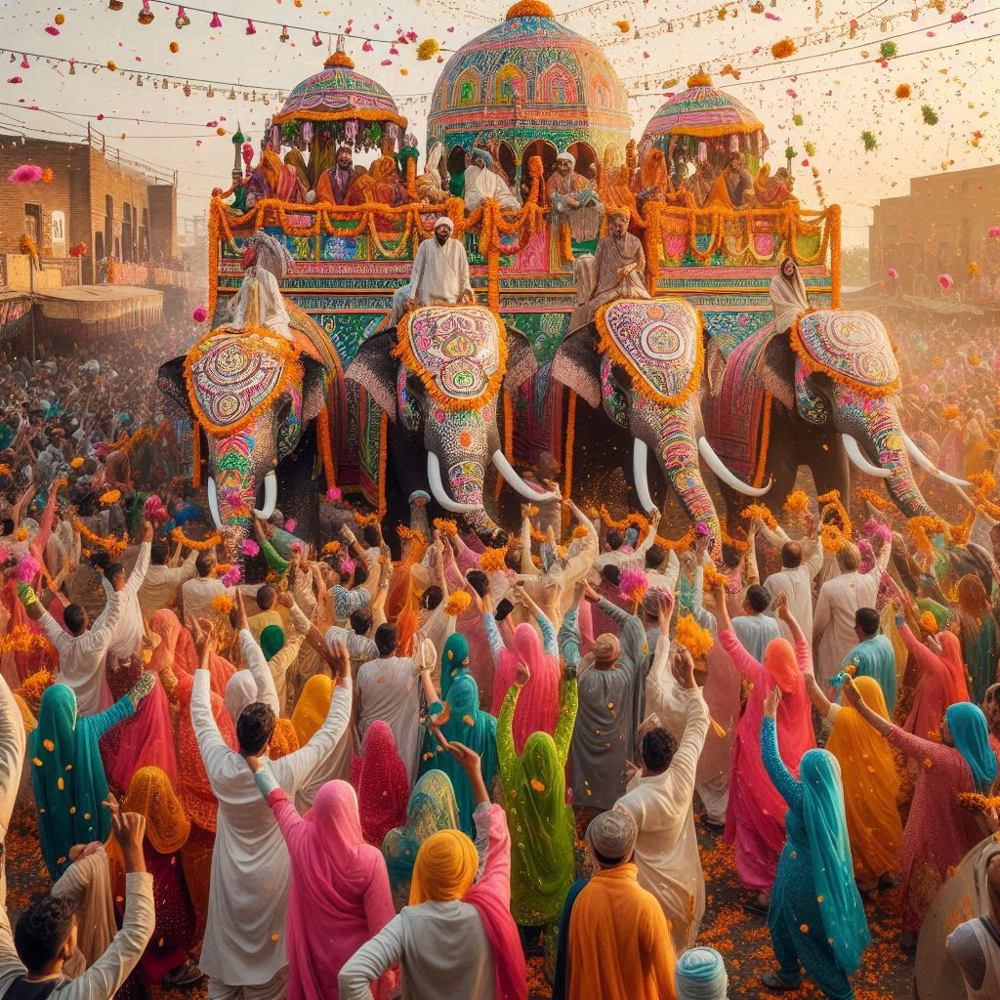

Haryana, known for its rich cultural heritage, celebrates a variety of festivals that reflect the state's traditional customs, agricultural practices, and religious beliefs. Here are some of the major festivals celebrated in Haryana:
1. Baisakhi
- Celebration: Baisakhi is one of the most important festivals in Haryana, celebrated on April 13th every year. It marks the harvest season and the beginning of the new agricultural cycle.
- Traditions: People celebrate by dancing the Bhangra and Gidda, wearing traditional attire, and participating in community feasts. Many visit gurdwaras to offer prayers.
2. Diwali
- Celebration: Like the rest of India, Diwali, the festival of lights, is widely celebrated in Haryana. It symbolizes the victory of light over darkness and good over evil.
- Traditions: Homes are decorated with diyas (oil lamps), rangoli (colorful patterns), and torans (decorative bands). Firecrackers are burst, and families come together to share sweets and celebrate the occasion.


3. Holi
- Celebration: Holi, the festival of colors, is celebrated with enthusiasm and vigor. It signifies the arrival of spring and the victory of good over evil.
- Traditions: People smear each other with colored powders, dance to traditional songs, and enjoy special foods like gujiya and thandai. Rural Haryana witnesses holika dahan, symbolizing the triumph of good.
4. Teej
- Celebration: Teej is predominantly celebrated by women, marking the onset of the monsoon season. It falls in July-August.
- Traditions: Women dress in traditional attire, sing folk songs, and gather to celebrate with swings tied to trees, fasting, prayers, and celebrations.
Conclusion
Haryana's festivals represent its agricultural roots, religious beliefs, and traditional customs. These festivals bring communities together and showcase the vibrant spirit of Haryana's people.